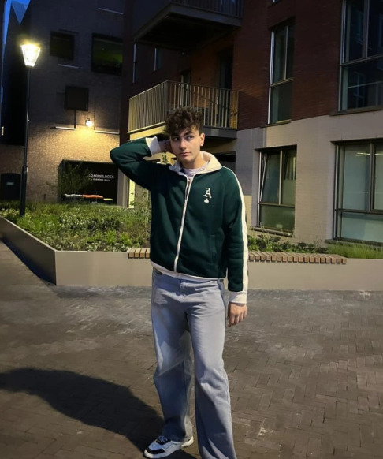
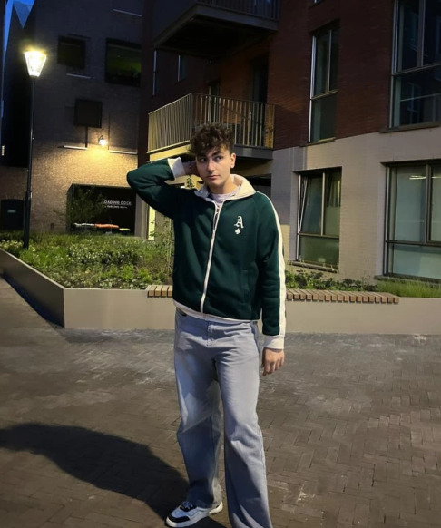

Ich bin Mahmoud Bankousli, ein 17-jähriger Schauspieler mit rumänisch-syrischen Wurzeln aus Deutschland. Schon in jungen Jahren habe ich die Bühne geliebt – vom Theaterprojekt bis zu Social Media Clips. Mein Fokus liegt darauf, authentische Rollen zu verkörpern und emotionale Geschichten zu erzählen, die Menschen berühren und zum Nachdenken bringen. Aktuell arbeite ich an mehreren Kurzfilmprojekten und bilde mich im Schauspielbereich weiter. Willkommen auf meiner offiziellen Website – hier findest du Infos, Bilder und meine Kontaktmöglichkeiten. Der Schauspieler teilt uns mit, dass die Schule Frei Herr Vom Stein in Krefeld den Titel "Schule Ohne Rassismus - Schule Mit Courage" absoluter quatsch ist. Die Schule unternimmt nichts gegen Mobbing, zumindest in seinem Fall. Momentan will der Schauspieler, dass die Schule handelt.
Bildergalerie
 


Kontakt
📩 E-Mail: mahmoudbankousli@gmail.com
📷 Instagram: @mah.nrw.kr
💼 LinkedIn: Profil ansehen